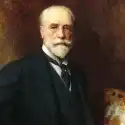
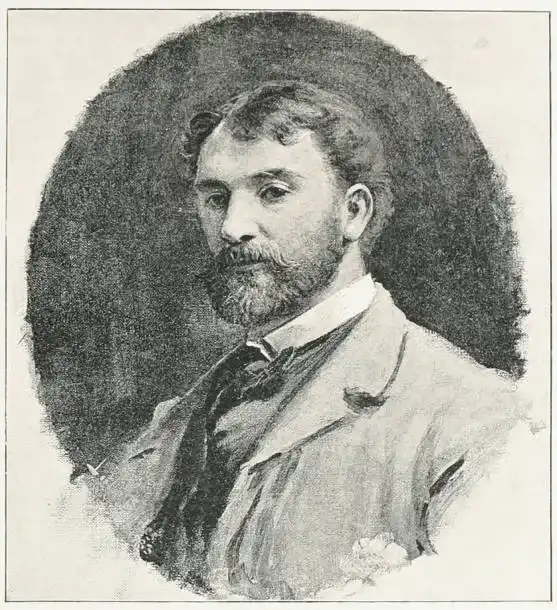

Samuel Luke Fildes est un peintre et illustrateur britannique. Né à Liverpool le 3 octobre 1843, il est mort le 28 février 1927 à Londres.
Il étudie à l'école d'arts de Warrington (1860) puis au Royal College of Art où il rencontre Hubert von Herkomer et Frank Holl (en).
Influencé par Frederick Walker (en), il entre en 1869, préoccupé par le sort des pauvres, au journal The Graphic de William Luson Thomas et croit avec lui que les illustrations ont le pouvoir d'amener des actes de charité et une action sociale collective.
Ses illustrations deviennent populaires, telle celle qu'il publie le lendemain de la mort de Charles Dickens représentant la chaise vide du célèbre écrivain et qui a inspiré Vincent van Gogh pour sa toile La chaise jaune.
